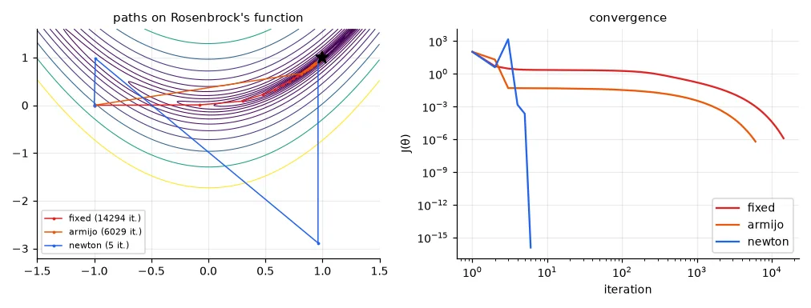
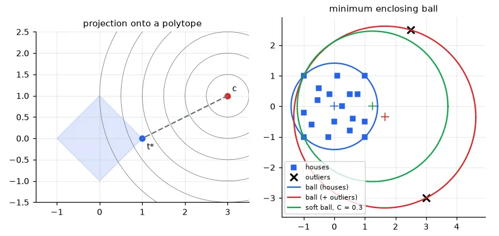

Why a whole lesson on optimisation#
Training a model = solving \(\min_\theta J(\theta)\). Lesson 02 did it for a quadratic bowl. Real costs are curved valleys (neural networks), or come with constraints (SVMs in lesson 05, probabilities that must sum to one, physical limits). This lesson collects the tools; later lessons just use them.
A hard test function#
Rosenbrock's "banana" function has its minimum \(J=0\) at \((1,1)\), at the bottom of a long, narrow, curved valley — the kind of geometry that makes simple methods struggle:
def J(t):
"""Rosenbrock's banana function: minimum J = 0 at (1, 1), at the bottom of a curved valley."""
return (1 - t[0]) ** 2 + 100 * (t[1] - t[0] ** 2) ** 2
def grad(t):
return np.array([-2 * (1 - t[0]) - 400 * t[0] * (t[1] - t[0] ** 2),
200 * (t[1] - t[0] ** 2)])
def hessian(t):
return np.array([[2 - 400 * t[1] + 1200 * t[0] ** 2, -400 * t[0]],
[-400 * t[0], 200]])
Hand-written derivatives are a classic source of silent bugs (a wrong sign still "trains", just badly). Always compare them once against finite differences, \(\partial J/\partial\theta_i \approx \big(J(\theta + h e_i) - J(\theta - h e_i)\big)/2h\):
def numerical_grad(f, t, h=1e-6):
"""Central finite differences: slow, but a reliable check of a hand-written gradient."""
e = np.eye(len(t))
return np.array([(f(t + h * e[i]) - f(t - h * e[i])) / (2 * h) for i in range(len(t))])
t = np.array([-0.7, 0.4])
print("analytic gradient", grad(t), "| numerical", numerical_grad(J, t).round(6))
print("analytic Hessian row 0", hessian(t)[0], "| numerical",
numerical_grad(lambda s: grad(s)[0], t).round(4))
analytic gradient [-28.6 -18. ] | numerical [-28.6 -18. ]
analytic Hessian row 0 [430. 280.] | numerical [430. 280.]
Deep learning frameworks compute gradients automatically (lesson 12), and torch.autograd.gradcheck does exactly this test.
Three ways down the valley#
All descent methods iterate \(\theta_{k+1} = \theta_k + \alpha_k\, \mathbf{d}_k\); they differ in the direction \(\mathbf{d}_k\) and the step \(\alpha_k\).
- Gradient descent, fixed step. \(\mathbf{d} = -\nabla J\), \(\alpha\) constant. The step must be small enough for the steepest part of the valley, so it is far too small everywhere else.
- Gradient descent + Armijo backtracking. Start with \(\alpha = 1\) and halve it until the cost decreases "enough": \(J(\theta + \alpha\mathbf{d}) \le J(\theta) + c\,\alpha\,\nabla J^\top \mathbf{d}\). The step adapts to the local landscape at the price of a few extra evaluations of \(J\).
- Newton's method. Approximate \(J\) by its second-order Taylor expansion and jump to the minimum of that quadratic: \(\mathbf{d} = -H^{-1}\nabla J\), \(\alpha = 1\). The Hessian \(H\) rescales each direction by its curvature — the cure for the elongated valleys of lesson 02.
def armijo(theta, d, g, alpha=1.0, rho=0.5, c=1e-4):
"""Backtracking: halve the step until J decreases at least c * alpha * (slope along d)."""
while J(theta + alpha * d) > J(theta) + c * alpha * g @ d:
alpha *= rho
return alpha
def minimise(theta0, method, tol=1e-3, max_iter=20000):
theta = theta0.astype(float).copy()
path = [theta.copy()]
for it in range(max_iter):
g = grad(theta)
if np.linalg.norm(g) <= tol:
break
if method == "fixed":
theta = theta - 1e-3 * g # fixed step size
elif method == "armijo":
theta = theta + armijo(theta, -g, g) * -g # steepest descent + line search
elif method == "newton":
theta = theta - np.linalg.solve(hessian(theta), g) # jump to the minimum of the local quadratic
path.append(theta.copy())
return theta, np.array(path), it
theta0 = np.array([-1.0, 0.0])
results = {}
for method in ("fixed", "armijo", "newton"):
theta, path, it = minimise(theta0, method)
results[method] = path
print(f"{method:6s}: {it:5d} iterations -> theta = {np.round(theta, 4)}, J = {J(theta):.2e}")
fixed : 14294 iterations -> theta = [0.9989 0.9978], J = 1.25e-06
armijo: 6029 iterations -> theta = [0.9992 0.9984], J = 6.22e-07
newton: 5 iterations -> theta = [1. 1.], J = 2.07e-17

Print the right counter
In my lab report Newton's method "also took 2,499 iterations" — the maximum. It didn't: the function returned the path but not its iteration count, and I printed the variable iter left over from the gradient-descent loop. Newton needs 5 iterations here. When two methods give suspiciously identical numbers, check which variable you are printing.
If Newton is so fast, why does nobody train neural networks with it? Because \(H\) has \(p^2\) entries for \(p\) parameters: for a network with 10⁷ weights that is 10¹⁴ numbers, and solving with it costs \(O(p^3)\). Deep learning uses first-order methods (SGD, Adam — lesson 12) that approximate the curvature cheaply, e.g. by normalising each parameter's step by the running size of its gradients.
Constraints: the Lagrangian and the dual#
Now minimise under inequality constraints:
The Lagrangian adds each constraint with a multiplier \(\mu_i \ge 0\): \(\mathcal{L}(\theta, \mu) = f(\theta) + \sum_i \mu_i g_i(\theta)\). At the optimum of a convex problem the KKT conditions hold: the gradient of \(\mathcal{L}\) is zero, constraints are satisfied, and complementary slackness \(\mu_i\, g_i(\theta^\star) = 0\) — a multiplier is non-zero only for constraints that are active (tight). Minimising \(\mathcal{L}\) over \(\theta\) first gives the dual problem in \(\mu\) alone. For convex problems both have the same optimal value (zero duality gap), so we can solve whichever is easier.
Example: projecting a point onto a polytope#
Find the point of the diamond \(|t_1| + |t_2| \le 1\) closest to \(c = (3, 1)\). Four linear constraints \(A\mathbf{t} \le \mathbf{b}\). CVXPY lets you write the problem as you would on paper and picks a solver:
# Project c onto the diamond |t1| + |t2| <= 1: min 1/2 ||t - c||^2 s.t. A t <= b
c = np.array([3.0, 1.0])
A = np.array([[1, 1], [1, -1], [-1, 1], [-1, -1]], dtype=float)
b = np.ones(4)
t = cp.Variable(2)
primal = cp.Problem(cp.Minimize(0.5 * cp.sum_squares(t - c)), [A @ t <= b])
primal.solve()
print("primal: t* =", np.round(t.value, 4), "objective", round(primal.value, 4))
Setting \(\nabla_t \mathcal{L} = (\mathbf{t} - \mathbf{c}) + A^\top\mu = 0\) gives \(\mathbf{t} = \mathbf{c} - A^\top \mu\); substituting back yields a quadratic problem in \(\mu \ge 0\):
# Lagrangian L(t, mu) = 1/2||t - c||^2 + mu^T (A t - b), mu >= 0.
# dL/dt = 0 -> t = c - A^T mu. Plugging it back gives the dual problem in mu only:
mu = cp.Variable(4)
dual = cp.Problem(cp.Minimize(0.5 * cp.quad_form(mu, A @ A.T) - (A @ c - b) @ mu), [mu >= 0])
dual.solve()
t_from_dual = c - A.T @ mu.value
print("dual: mu* =", np.round(mu.value, 4), "-> t = c - A^T mu =", np.round(t_from_dual, 4))
print("duality gap:", round(primal.value + dual.value, 6),
"| multipliers from the primal solver:", np.round(primal.constraints[0].dual_value, 4))
primal: t* = [ 1. -0.] objective 2.5
dual: mu* = [1.5 0.5 0. 0. ] -> t = c - A^T mu = [1. 0.]
duality gap: 0.0 | multipliers from the primal solver: [1.5 0.5 0. 0. ]
Only the two constraints that meet at the vertex \((1, 0)\) have non-zero multipliers — complementary slackness in action. And CVXPY's primal solver hands us the same multipliers for free (constraint.dual_value). The dual is not a curiosity: in lesson 05 it is what turns a linear SVM into a kernel SVM.
The minimum enclosing ball#
Where do we put a fire station so that the farthest of 18 houses is as close as possible? Find the smallest ball (centre \(\mathbf{z}\), radius \(R\)) containing all points: \(\min R^2\) s.t. \(\|\mathbf{x}_i - \mathbf{z}\|^2 \le R^2\). Its dual is
The centre is a weighted average of the support points — the few points on the boundary, the only ones with \(\mu_i > 0\).
houses = np.loadtxt(U.path("houses.csv"), delimiter=",") # (18, 2) coordinates
def enclosing_ball(X):
"""Minimum enclosing ball through its dual: max sum mu_i ||x_i||^2 - ||X^T mu||^2, mu in the simplex."""
mu = cp.Variable(len(X))
q = (X ** 2).sum(1)
prob = cp.Problem(cp.Minimize(cp.sum_squares(X.T @ mu) - q @ mu), [mu >= 0, cp.sum(mu) == 1])
prob.solve()
mu = mu.value
z = X.T @ mu # centre = weighted mean of the support points
support = mu > 1e-4
r = np.sqrt(((X[support] - z) ** 2).sum(1).max())
return z, r, support
z, r, sup = enclosing_ball(houses)
print("houses: centre %s, radius %.4f, %d support points" % (np.round(z, 4), r, sup.sum()))
outliers = np.array([[3.0, -3.0], [2.5, 2.5]])
z2, r2, sup2 = enclosing_ball(np.vstack([houses, outliers]))
print("with 2 outliers: centre %s, radius %.4f, %d support points" % (np.round(z2, 4), r2, sup2.sum()))
houses: centre [0. 0.], radius 1.4142, 4 support points
with 2 outliers: centre [ 1.65 -0.35], radius 2.9741, 3 support points
A factor ½ that only shows up with outliers
I copied the dual objective from the previous exercise, which had a \(\frac12\) in front of the quadratic term: 0.5 * cp.sum_squares(X.T @ mu) - q @ mu. That is a different problem. On the symmetric houses the centre is (0, 0) either way, so the mistake was invisible; with the two outliers it gave a centre at (2.80, −0.75) whose "ball" leaves the house at (−1, 1) 4.18 away, outside a radius of 2.81. Two lessons: derive the dual yourself, and check the constraints of the answer (max distance ≤ R?) — a one-line test would have caught it.
Two outliers move the centre and double the radius: the hard ball must contain everything. The fix is the same idea as the soft-margin SVM: allow points outside, but make them pay. With slack variables \(\xi_i \ge 0\),
def soft_ball(X, C):
"""Allow points outside the ball at a price: min R^2 + C sum(xi), ||x_i - z||^2 <= R^2 + xi."""
z, R2, xi = cp.Variable(2), cp.Variable(), cp.Variable(len(X))
cons = [cp.sum_squares(X[i] - z) <= R2 + xi[i] for i in range(len(X))] + [xi >= 0]
cp.Problem(cp.Minimize(R2 + C * cp.sum(xi)), cons).solve()
return z.value, np.sqrt(R2.value), xi.value > 1e-6
Xall = np.vstack([houses, outliers])
z3, r3, out3 = soft_ball(Xall, C=0.3)
print("soft ball (C = 0.3): centre %s, radius %.4f, points left outside: %s"
% (np.round(z3, 4), r3, np.flatnonzero(out3)))
soft ball (C = 0.3): centre [ 1.2499 -0. ], radius 2.4621, points left outside: [18 19]

The soft ball leaves the outliers out, but it is still bigger and off-centre: an outlier outside the ball keeps pulling on the centre, with a force proportional to \(C\). Lower \(C\) and the ball shrinks further — but starts excluding houses too. \(C\) is a hyper-parameter: it sets the price of an error, and only validation data can tell you the right price. This model — a soft ball around "normal" data — is the Support Vector Data Description, used for anomaly detection.
Exercises#
- Implement momentum: \(\mathbf{v} \leftarrow \beta \mathbf{v} - \alpha\nabla J\), \(\theta \leftarrow \theta + \mathbf{v}\) with \(\beta = 0.9\). How many iterations on Rosenbrock with a fixed \(\alpha\)?
- Newton fails when \(H\) is not positive definite (try \(\theta_0 = (0, 1)\) and print the eigenvalues of \(H\)). Add damping: solve \((H + \lambda I)\mathbf{d} = -\nabla J\) with \(\lambda\) large enough.
- Make the soft ball robust in two steps: fit it, drop the points with \(\xi_i > 0\), refit the hard ball on what is left. Do you recover the houses-only ball?